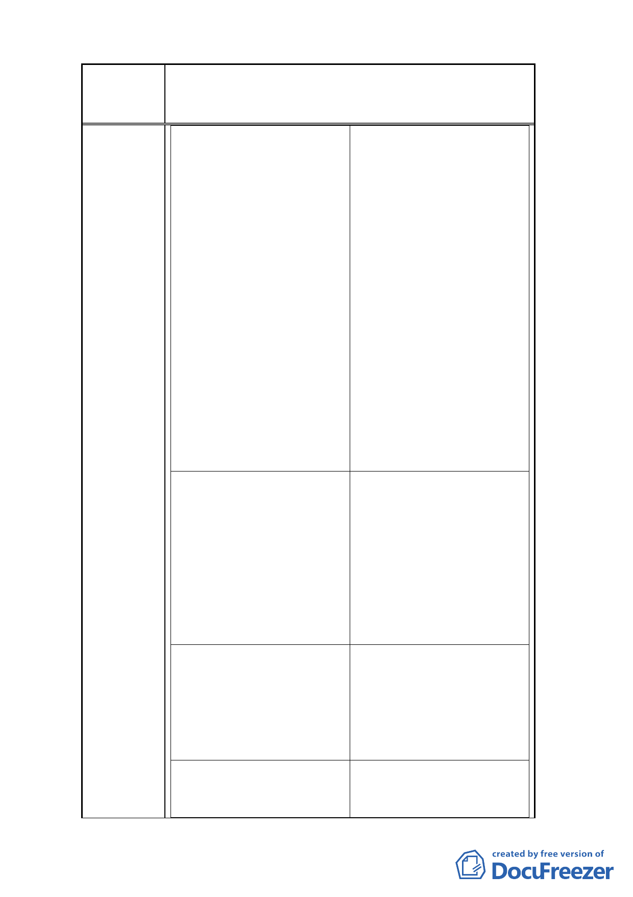

案名
變更臺北市南港車站特定專用區部分特定商業區及
部分體育場用地為道路用地暨修訂土地使用管制規
定計畫案
成後 2 年內開發）：
成後 2 年內開發﹚：
基準容積×10％
基準容積×10％
3.規模獎勵（全街廓開發基地 3.規模獎勵（全街廓開發基地
建築面積＞7000 ㎡）：
建築面積＞7000 ㎡）：
基準容積×15％
基準容積×15％
4.開放空間獎勵（上限 20％， 4.開放空間獎勵（上限 20％，
暫以 15％計算）
暫以 15％計算）
5.獎勵後容積率
5.獎勵後容積率
436％ ×（1＋10％＋15％＋ 436％ ×（1＋10％＋15％＋
15％）＝610.4％
15％）＝610.4％
6.建築技術規則允許免計入容 6.建築技術規則允許免計入容
積（機電空間）
積（機電空間）
610.4％ ×（1＋15％）
610.4％ ×（1＋15％）
＝701.96％
＝701.96％
7.建築技術規則允許免計入容 7.建築技術規則允許免計入容
積（陽台梯廳）
積（陽台梯廳）
701.96％×（1＋15％）
701.96％×（1＋15％）
＝807.25％
＝807.25％
二、規劃設計構想說明：
二、規劃設計構想說明：
1.底座 15 公尺以建蔽率 40％， 1.底座 15 公尺以建蔽率 60％，
樓層數二層作設計。
樓層數二層作設計。
2.三層以上規劃兩棟主建築， 2.三層以上規劃兩棟主建築，
一為商務飯店，一為辦公大 一為商務飯店，一為辦公大
樓，且每層層高 4.0 公尺，然 樓，且每層層高 4.0 公尺，然
為配合棟距規範及建築群樓 為配合棟距規範及建築群樓
效果，使用建蔽率將縮減為 效果，使用建蔽率將縮減為
約 33％。
約 33％。
三、建蔽率 40％建築規模分析： 三、建蔽率 60％建築規模分析：
1.1～2 樓 40％×2＝80％
1.1～2 樓 60％ ×2＝120％
2.核算三樓以上建蔽率約 33％ 2.核算三樓以上建蔽率約 33％
時，建築樓層數需求為 時，建築樓層數需求為
（807.25％－80％）÷33％＝ （807.25％－120％）÷33％＝
22.03 層（取 23 層）
20.82 層（取 21 層）
四、建築高度需求分析：
四、建築高度需求分析：
1.規劃二層建築量體底座之建 1.規劃二層建築量體底座之建
築高度計 15 公尺
築高度計 15 公尺
8